"Bagaimana menilai kerusakan ribuan bangunan dalam jendela waktu itu — tanpa mempertaruhkan nyawa tim penyelamat?"
Bangunan tidak sekadar "rusak" atau "tidak rusak." Skala EMS-98 mendefinisikan lima tingkat kerusakan — masing-masing menuntut protokol SAR yang berbeda.
⚠ Zona Ambiguitas: Grade 3 & 4 adalah pasangan paling sulit dibedakan dari udara — inilah tantangan utama penelitian ini.
Setiap metode tunggal memiliki titik buta fatal — dan titik buta RGB vs DSM bersifat komplementer.
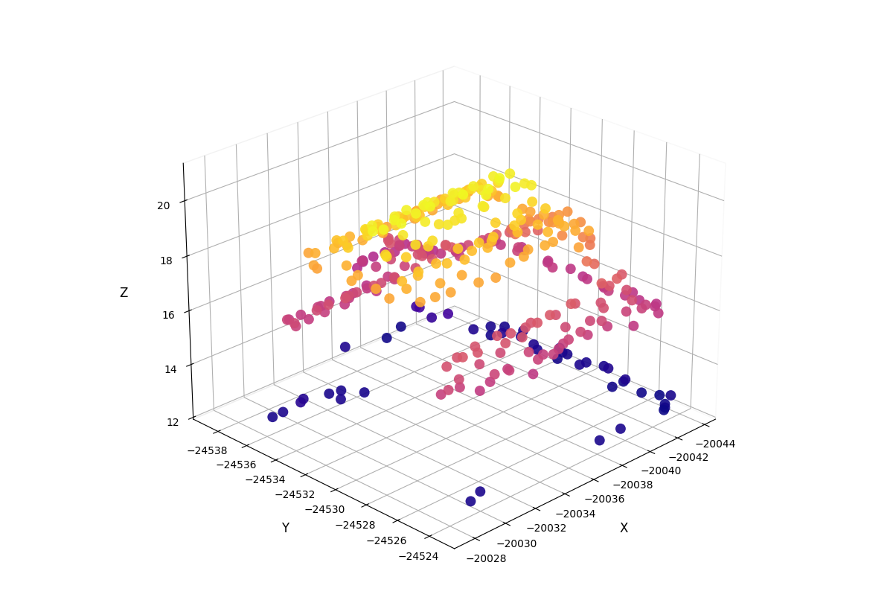
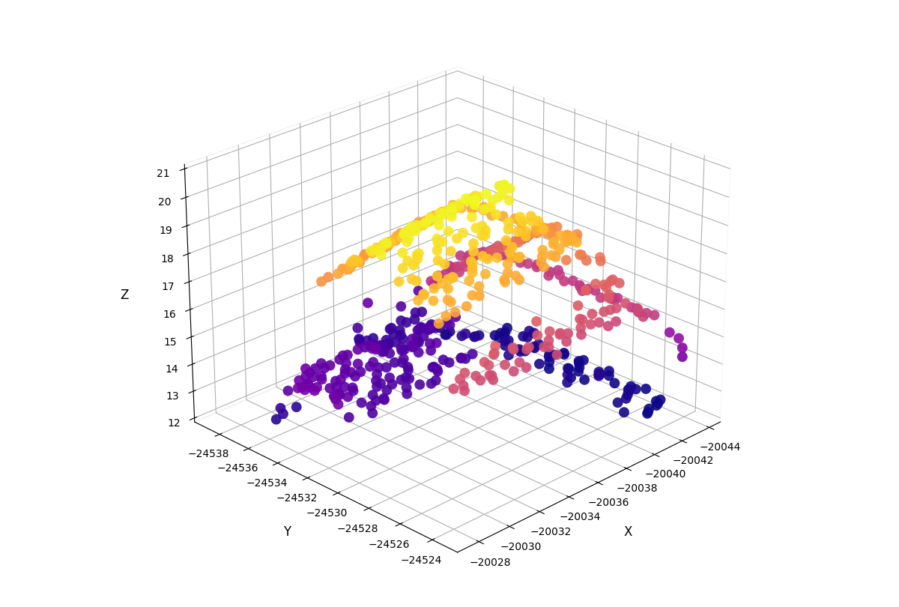
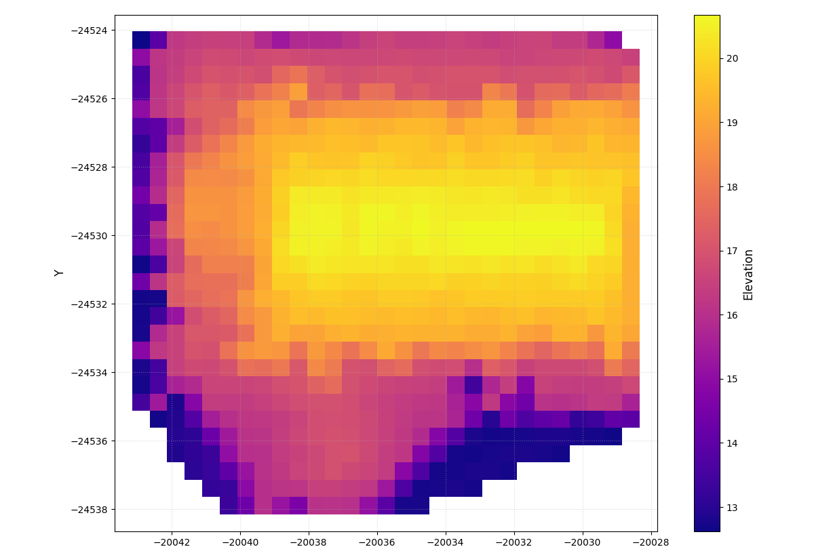
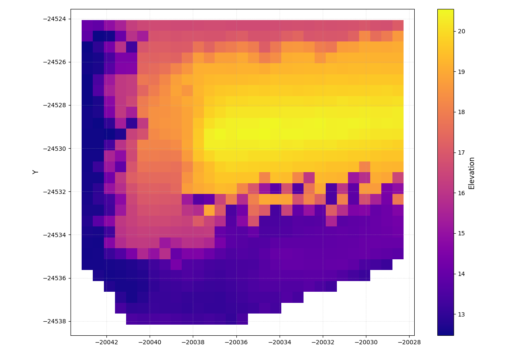
14 metode dari 4 kategori — semuanya memiliki keterbatasan yang menjadi motivasi CMF-BDANet.
Baseline dalam penelitian ini: FCSNN, FUJITA, Moya, dan Hajeb — dipilih karena relevan dengan dataset Kumamoto 2016 dan mewakili spektrum metode dari deep learning DSM-only hingga SVM berbasis fitur geometrik.
Metode fusi yang ada menggabungkan modalitas terlalu dini (raw pixel concat) atau terlalu akhir (decision fusion). Tidak ada yang memungkinkan model memutuskan seberapa banyak mempercayai tiap modalitas berdasarkan apa yang dipelajarinya — secara adaptif, per-level, per-bangunan.
Celah spesifik: belum ada metode yang mengevaluasi fusi atensi lintas-modal multi-level pada semua 5 grade EMS-98 dengan ablasi kuantitatif dan uji statistik.
CMF-BDANet mengklasifikasikan kerusakan lebih akurat dan stabil — peningkatan Accuracy, Macro-F1, dan MCC vs semua baseline.
Integrasi DSM+RGB melalui MCMAF memberikan peningkatan performa signifikan vs varian tanpa multimodal dan/atau tanpa atensi.
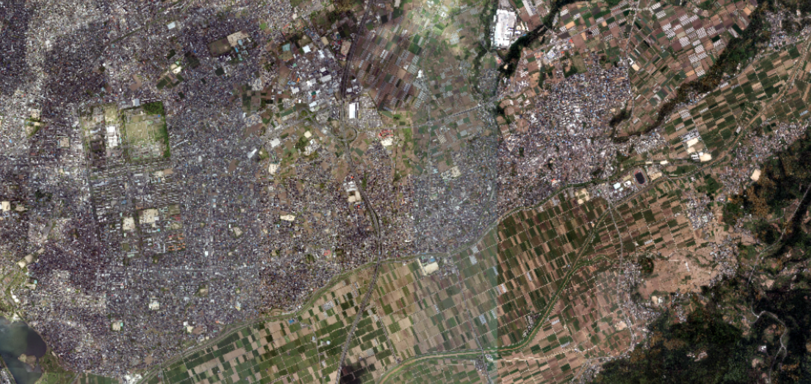
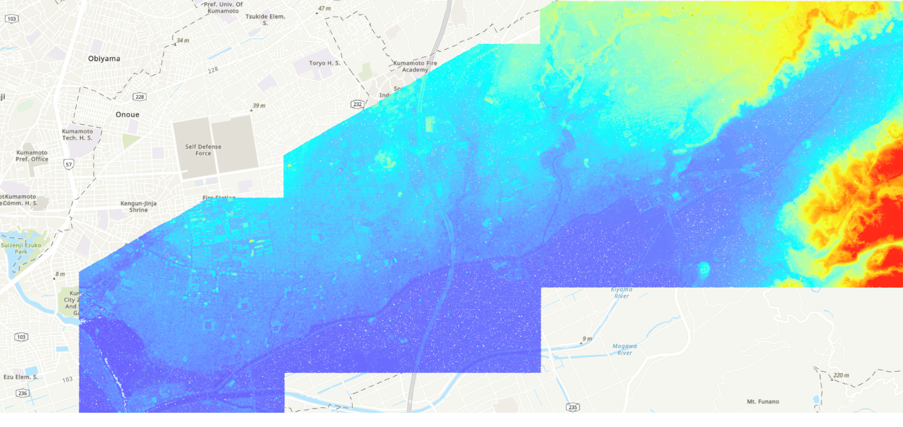
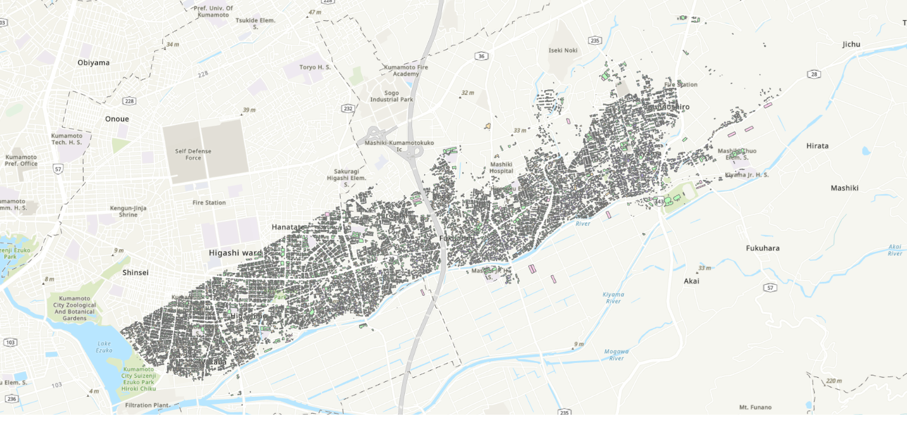
✓ Tervalidasi survei lapangan — Label dari Hajeb et al. (2020), bukan pseudo-label. Ketidakseimbangan kelas (Grade 2 = 52%, Grade 5 = 6.33%) adalah kendala dunia nyata yang memotivasi penggunaan Macro-F1 dan MCC sebagai metrik primer.
Pipeline dua alur paralel — LiDAR dan RGB — yang melebur menjadi 12 kanal aktif per bangunan.
Sel dengan sedikit LiDAR return tidak andal — model perlu tahu ini. σ_z mengkodekan reliabilitas per sel. Terbukti kritis untuk Grade 3 & 4 pada ablasi.
Puing dan struktur runtuh menyebarkan titik berbeda dari atap utuh. Densitas titik/m² adalah sinyal yang tidak ada di metode sebelumnya.
Tiga stream: Siamese DSM change encoder, RGB-DSM early fusion encoder, dan MCMAF — yang secara adaptif memutuskan bobot tiap modalitas di setiap level.
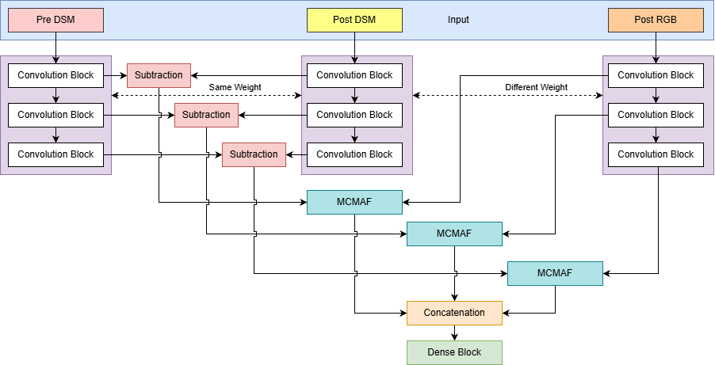
v2 menambahkan Siamese RGB Encoder terpisah — memisahkan perubahan RGB dari early fusion. Ini varian terkontrol yang mengungkap kontribusi masing-masing.
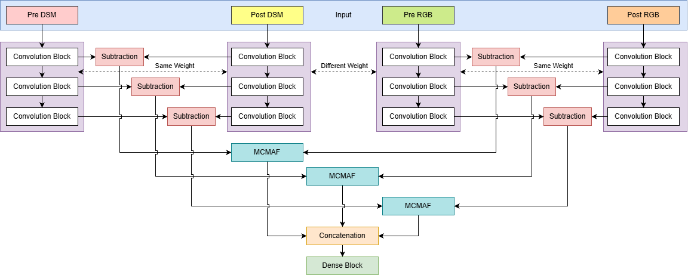
| Komponen | CMF-BDANet | CMF-BDANet-v2 |
|---|---|---|
| Siamese DSM Encoder | ✓ | ✓ |
| Siamese RGB Encoder (θ_R) | — | ✓ |
| Early Fusion RGB-DSM | ✓ | — |
| Total Parameter | ~1.149K | ~1.177K |
Kontras ekstrem: utuh vs hancur total. Apakah model bisa menemukan bangunan yang benar-benar runtuh?
Relevan operasional. Ketidakseimbangan ekstrem: Grade 5 hanya 6.33%.
Paling realistis. Di sinilah fusi multimodal diharapkan membuktikan nilainya.
| Model | F₁ | MCC | vs CMF-BDANet |
|---|---|---|---|
| CMF-BDANet | 0.8563 | 0.8974 | — |
| CMF-BDANet-v2 | 0.8427 | 0.8852 | p=0.901 n.s. |
| FUJITA | 0.8313 | 0.8831 | p=0.525 n.s. |
| FCSNN | 0.8199 | 0.8682 | p=0.068 n.s. |
| Hajeb (SVM) | 0.6601 | 0.7713 | p<10⁻⁶ ✓ |
| Moya (SVM) | 0.6380 | 0.7444 | p<10⁻⁶ ✓ |
Saat tugas ekstrem (G1 vs G5), sinyal perubahan DSM sudah sangat diskriminatif — menambahkan RGB dan atensi hampir tidak menggerakkan jarum. Ini bukan kegagalan; ini temuan yang benar. Ujian sesungguhnya ada di S3.
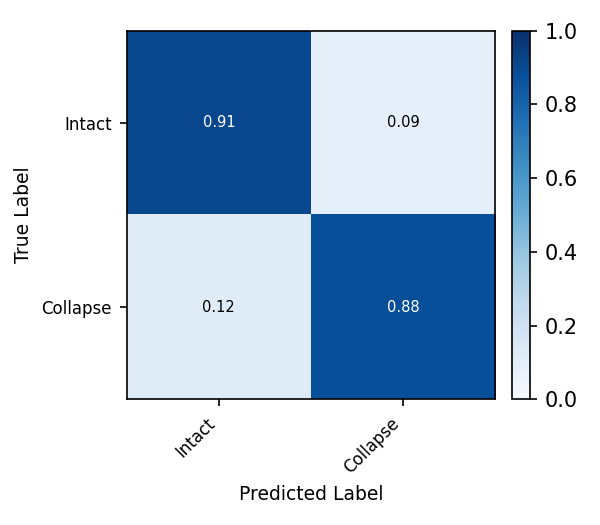
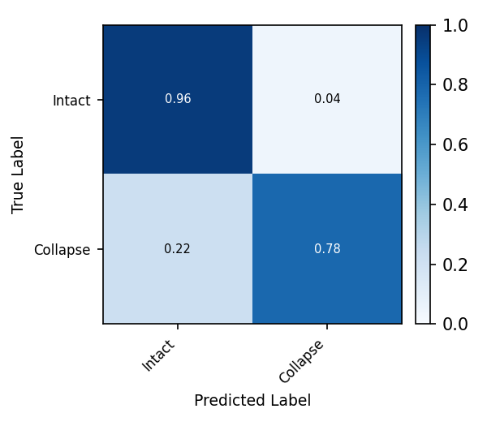
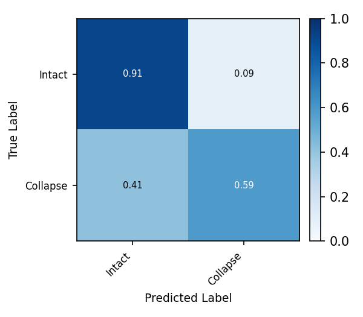
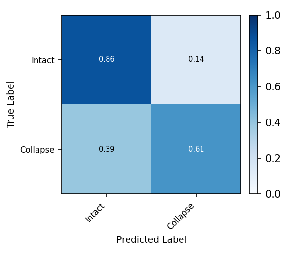
| Model | F₁ | MCC |
|---|---|---|
| FUJITA | 0.6202 | 0.8056 |
| CMF-BDANet | 0.6190 | 0.8029 |
| CMF-BDANet-v2 | 0.6154 | 0.8033 |
| FCSNN | 0.5532 | 0.7712 |
| Hajeb (SVM) | 0.4685 | 0.7243 |
| Moya (SVM) | 0.4103 | 0.6942 |
CMF-BDANet-v2 vs FUJITA: χ²=0.000, p=1.000 — pola prediksi mereka secara statistik identik. Ketidakseimbangan kelas ekstrem membuat semua model DL setara karena sinyal biner "Grade 5 atau bukan" cukup ditangkap DSM saja.
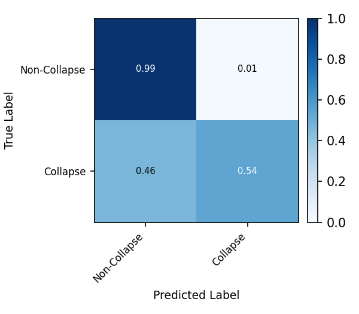
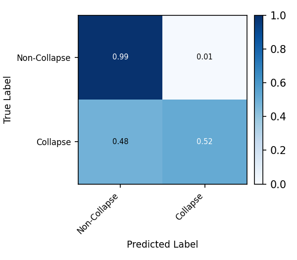
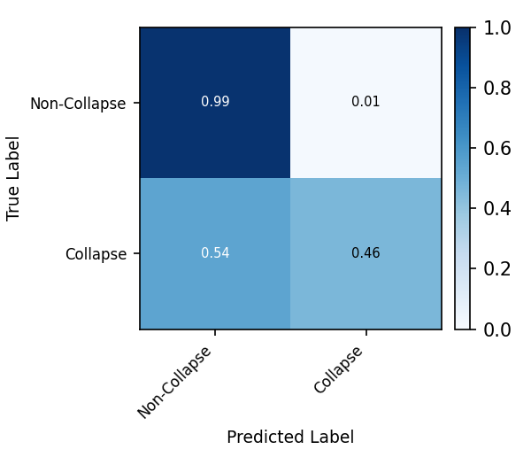
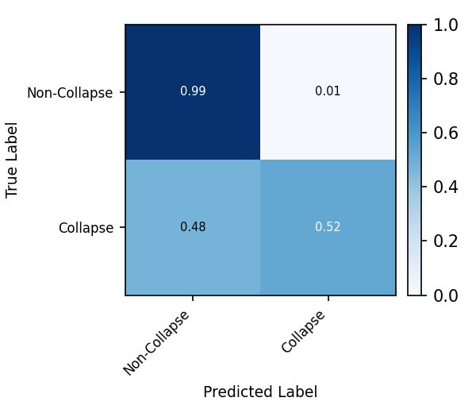
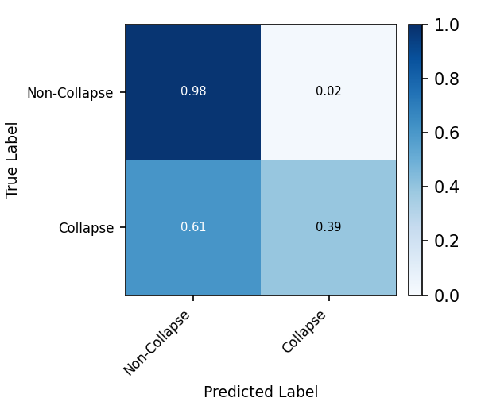
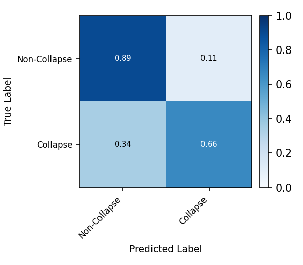
| Model | F₁ | MCC |
|---|---|---|
| CMF-BDANet | 0.5878 | 0.7305 |
| CMF-BDANet-v2 | 0.5635 | 0.7132 |
| FCSNN | 0.5247 | 0.6903 |
| FUJITA | 0.4141 | 0.7018 |
| Hajeb (SVM) | 0.3975 | 0.6111 |
| Moya (SVM) | 0.3097 | 0.5710 |
FUJITA: F1=0.000 di Grade 3 & 4 — bukti paling jelas bahwa DSM saja tidak cukup. Tanpa RGB, model tidak bisa membedakan tingkat kerusakan menengah sama sekali.
| Model | Grade 1 | Grade 2 | Grade 3 | Grade 4 | Grade 5 | Macro F1 |
|---|---|---|---|---|---|---|
| CMF-BDANet | 0.781 | 0.712 | 0.383 | 0.443 | 0.621 | 0.5878 |
| CMF-BDANet-v2 | 0.762 | 0.694 | 0.354 | 0.411 | 0.608 | 0.5635 |
| FCSNN | 0.731 | 0.671 | 0.321 | 0.388 | 0.583 | 0.5247 |
| FUJITA | 0.712 | 0.648 | 0.000 ! | 0.000 ! | 0.615 | 0.4141 |
| Hajeb SVM | 0.594 | 0.581 | 0.228 | 0.211 | 0.374 | 0.3975 |
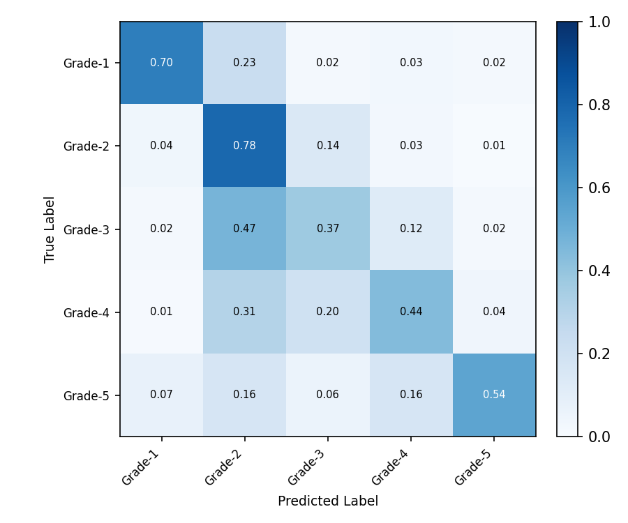
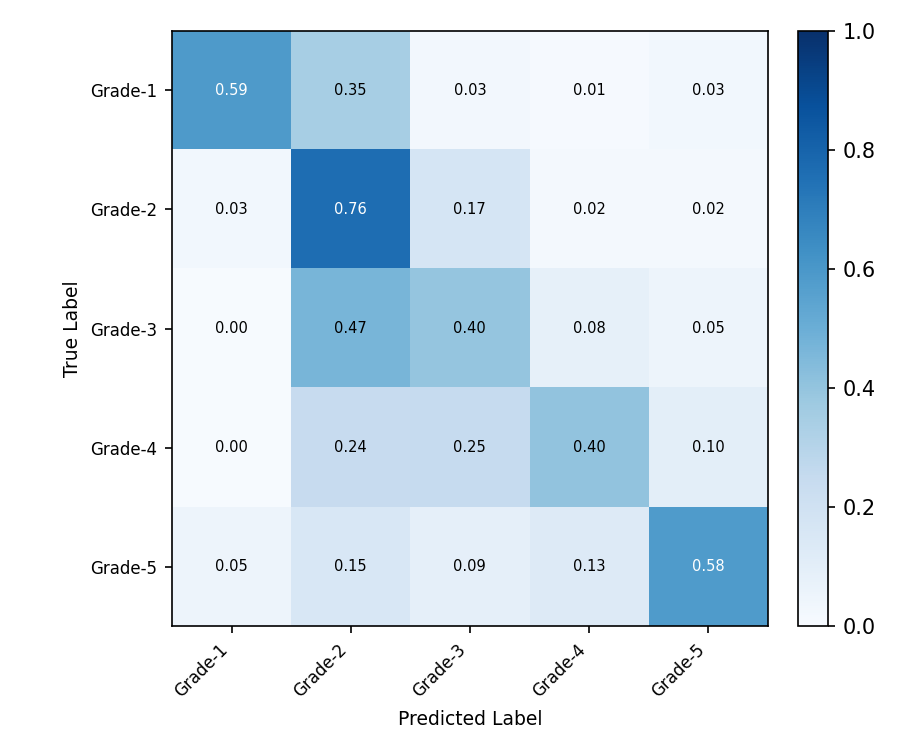
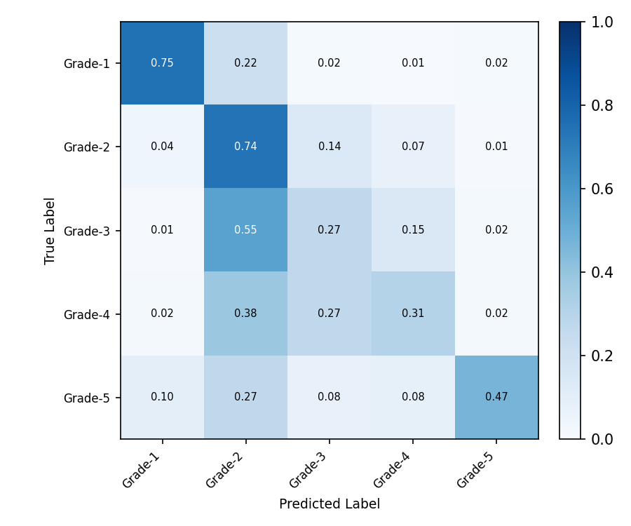
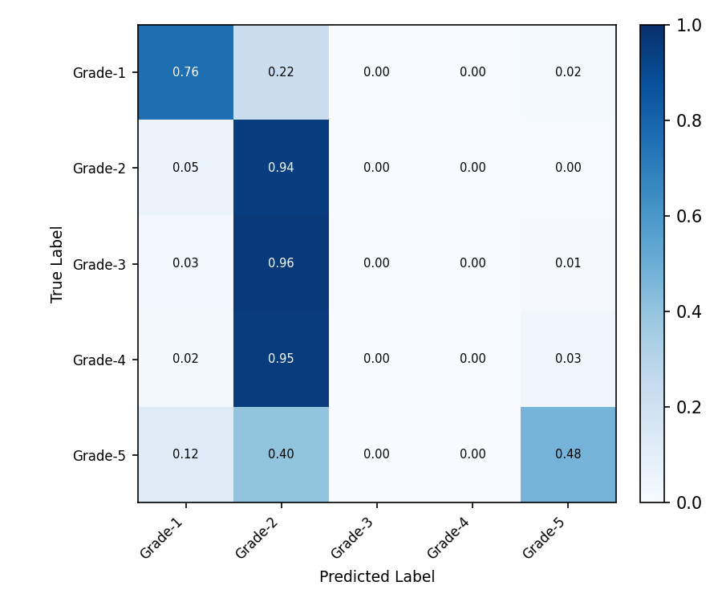
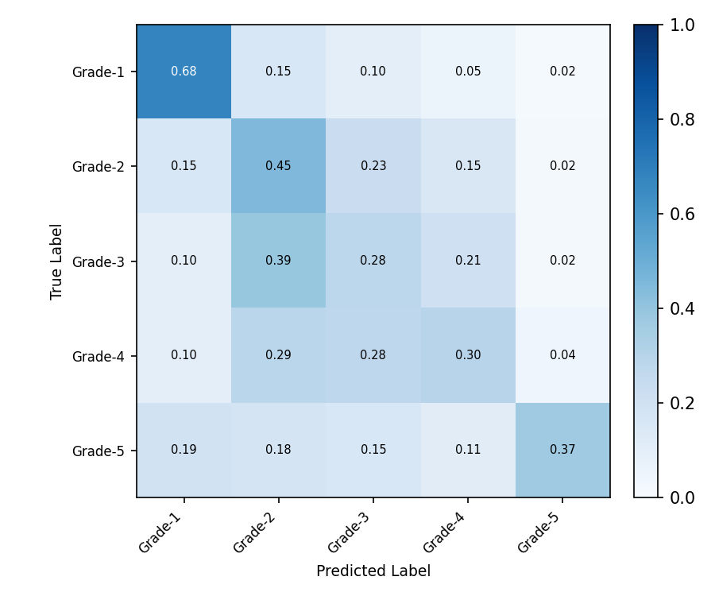
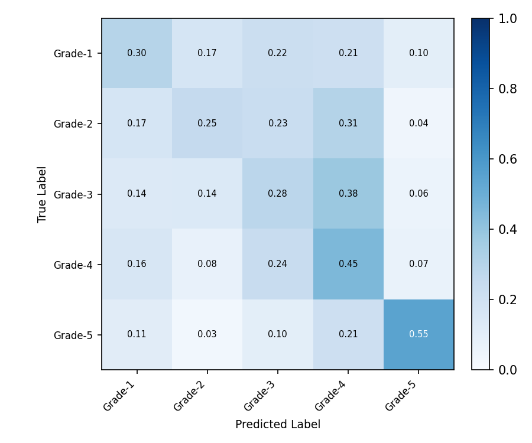
Dua pilihan desain paling bertanggung jawab atas keunggulan S3: (1) kanal σ_z — sinyal reliabilitas baru, dan (2) MCMAF multi-level — gating adaptif yang belajar dari data.
MCMAF bukan kotak hitam. Bobot Softmax-nya dapat diinterpretasikan secara fisik dan polanya konsisten dengan makna fisik tiap grade kerusakan.
| Kelas | Level Rendah (8×8) | Level Tengah (4×4) | Level Tinggi (2×2) |
|---|---|---|---|
| Grade 1 — Utuh | RGB 0.834 ↑↑ | ~50/50 | DSM sedikit ↑ |
| Grade 2 | RGB ↑ | ~50/50 | ~50/50 |
| Grade 3 | ~50/50 | ~50/50 | ~50/50 |
| Grade 4 | ~50/50 | ~50/50 | ~50/50 |
| Grade 5 — Runtuh | DSM 0.657 ↑ | DSM 0.909 ↑↑↑ | RGB (rubble) |
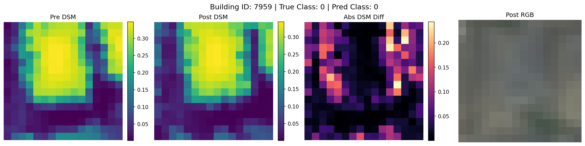
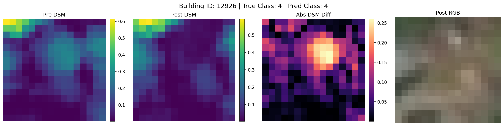
Bobot 50/50 di semua level untuk Grade 3 & 4 bukan kegagalan model — ini cerminan ambiguitas inheren skala EMS-98 itu sendiri. Batas Grade 3–4 memang fuzzy di dunia nyata. Ketidakpastian model mencerminkan ketidakpastian ground truth.
Apakah rasterisasi kehilangan informasi? Bisakah area_ratio = A_post/A_pre dari bidang atap RANSAC menambah daya diskriminatif?
RANSAC satu-bidang dan multi-bidang keduanya lebih buruk dari classifier acak di semua tiga skenario. Puing membentuk bidang planar yang disalah-tafsirkan sebagai "atap utuh."
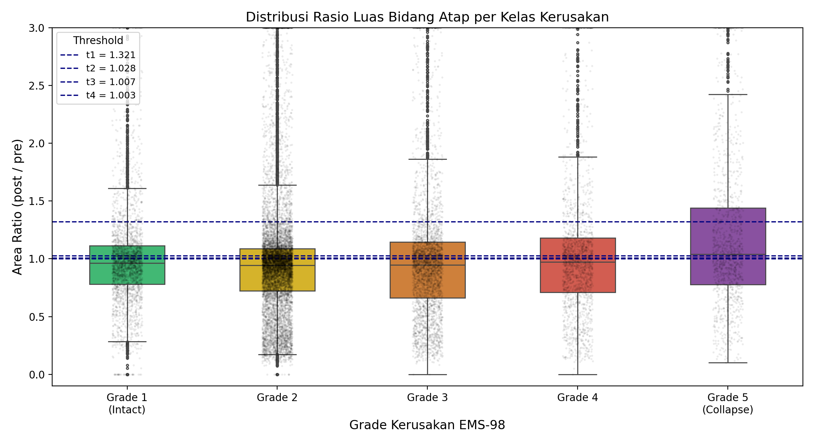
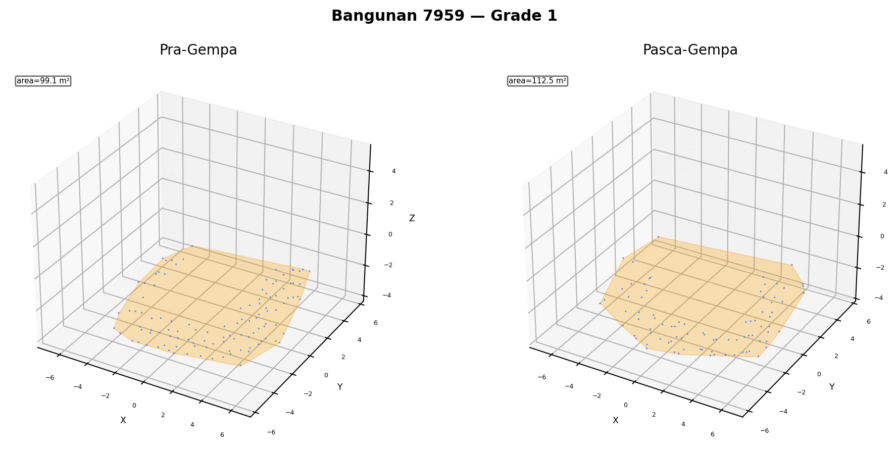
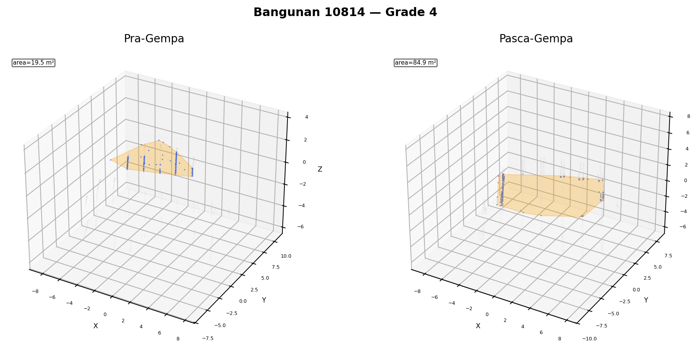
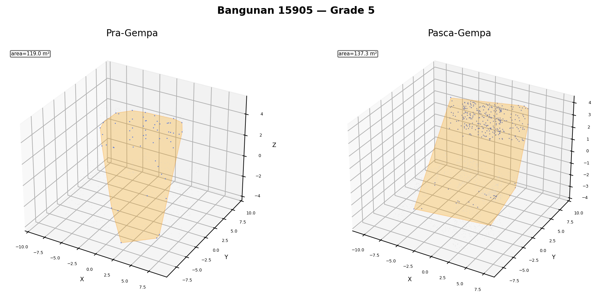
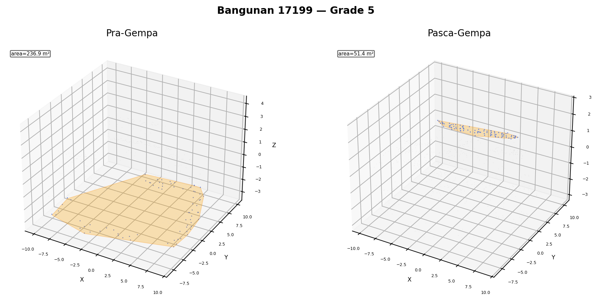
✓ Implikasi Positif: Hasil negatif ini memperkuat tesis. DSM rasterisasi menangkap perubahan ketinggian per sel yang tahan terhadap bentuk puing — lebih stabil dari fitur geometrik 3D mentah untuk tugas ini.
Jaringan tiga-stream pertama dengan gating adaptif multi-level untuk klasifikasi EMS-98. Siamese DSM + early fusion RGB-DSM + MCMAF.
Kanal reliabilitas σ_z dan ρ yang baru — terbukti kritis dalam ablasi untuk Grade 3 & 4. Tidak ada metode sebelumnya yang menggunakan ini.
3 skenario × 4 baseline × 6 metrik × uji hipotesis. Kerangka evaluasi paling ketat yang diterapkan pada dataset Kumamoto.
Analisis pertama distribusi bobot atensi per grade EMS-98 di level fitur berganda. Model benar-benar belajar mempercayai modalitas yang tepat.
RANSAC gagal karena area_ratio terlalu sederhana. Normal vector, residual multi-skala, rasio inlier.
Focal loss, SMOTE pada kelas minoritas, cost-sensitive learning untuk Grade 5.
Haiti 2010, Turki 2023, tipologi bangunan berbeda — wajib sebelum deployment.
Feature Pyramid Networks untuk menangani variasi ukuran bangunan.
SAR (menembus awan), kanal statistik LiDAR (persentil ketinggian, intensitas return).
Inisialisasi dari change detection pra-latih (LEVIR-CD) untuk mengurangi ketergantungan pada data berlabel.
Langkah terpenting: Fitur 3D yang lebih kaya untuk Grade 3 & 4 — kelas tersulit dan paling berdampak pada keputusan SAR nyata.
"CMF-BDANet membuktikan bahwa fusi multimodal melalui atensi adaptif membuka dimensi baru — tidak hanya bangunan mana yang rusak, tetapi seberapa parah, dan mengapa model bisa tahu perbedaannya."
Terima kasih kepada Prof. Dr. Eng. Wisnu Jatmiko dan Aprinaldi, Ph.D.Eng.
Adyatma Wijaksara Aryaputra Nugraha Yudha · 2506692235 · Magister Ilmu Komputer · Universitas Indonesia · 2026